雨树 · 图文回读
第1段
雨树，我们的树，我们无处不在的风景。
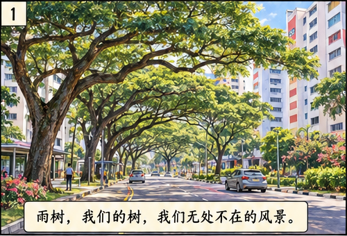
第2段
不论何时，当你从远处看她，她都像一把大伞，静静地为人们遮阳挡雨。每天早上，太阳出来后，她把休息了一夜的叶子逐一展开，然后在蓝天下姿态万千地站出一路风景。每天傍晚，在与太阳亲密接触一天后，不知是不是累了，她会把疲惫的叶子轻轻合上。下雨前，天色转黑，她便从容地把翠绿的叶子“关”上，等待风雨的来临。所以，她有一个非常浪漫的名字——雨树。
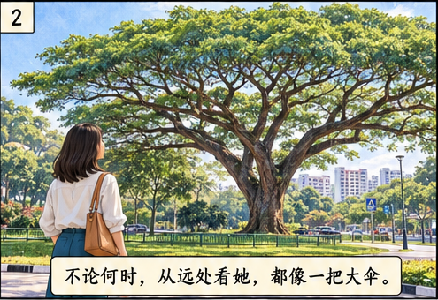
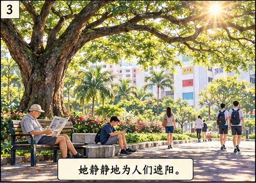
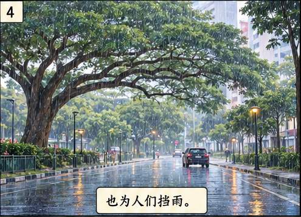
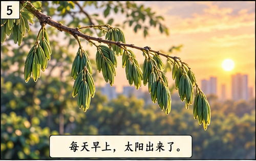
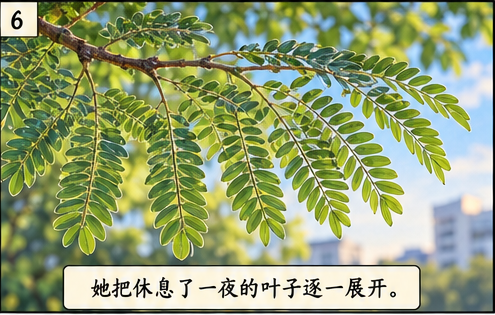
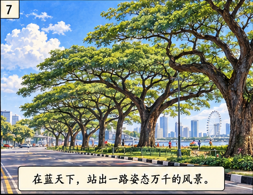
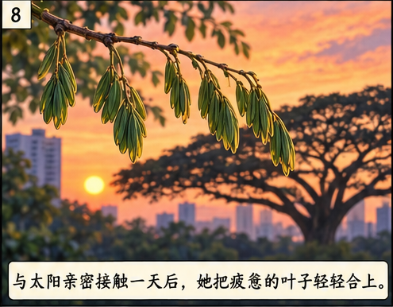
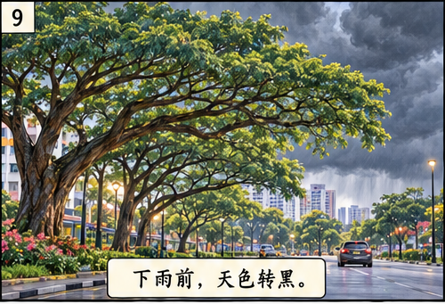
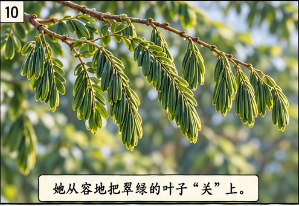
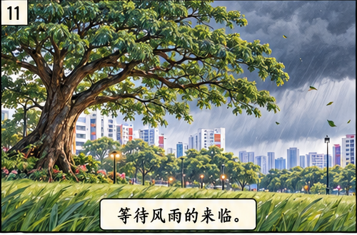
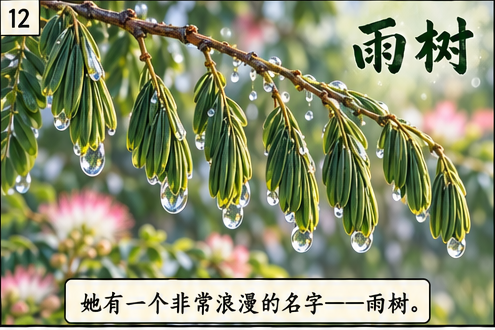
第3段
如果你住的地方比雨树高，那么，当她的花季来临时，你居高临下，可以看到大片粉红的花海。在清风里，花儿轻轻柔柔地摇摆，随着叶子发出的沙沙声响，晃动成一波波诗意的粉红之浪，令人心旷神怡。
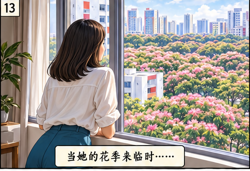
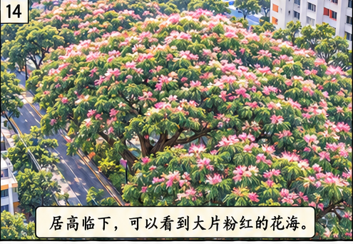
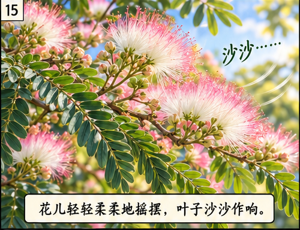
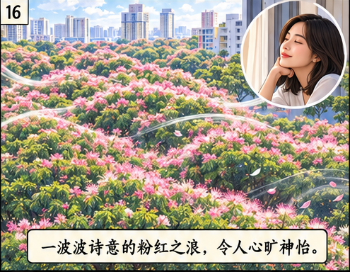
第4段
雨树，是新加坡无处不在的风景。空旷的停车场里，她为曝晒在烈日下的汽车遮阳；宽阔的草场边，她把炎阳遮挡成柔柔的凉意；长长的道路两旁，她用枝干繁叶合拢成一片美丽的林荫大道。
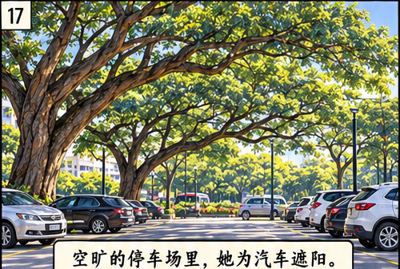
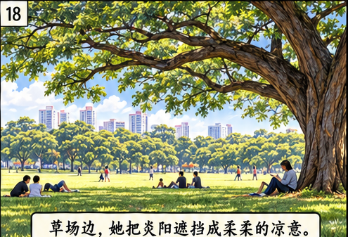
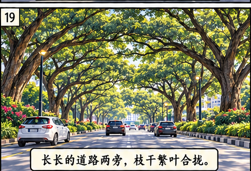
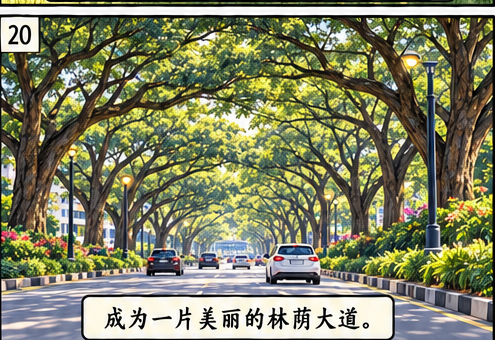
第5段
近年来我经常出国，每次在前往樟宜机场的东海岸公园大道上，雨树总是默默地耸立在一旁给我祝福。望着我渐行渐远的背影，她似乎知道我一定会回来，总在身后依依地叮咛：“出国在外，自己保重！”每当我双足踏上家乡的土地，她又以等待孩子归来的注视，温柔地对我张开欢迎的双臂，让我倍感家的温馨。
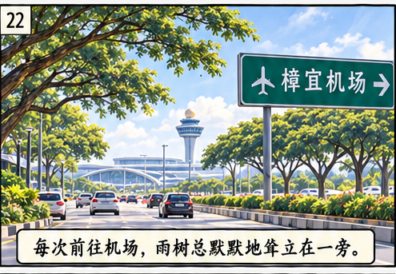
第6段
我很欣赏雨树有别于其他树种的千姿百态。有时候我站在树下，出神地看着她粗糙的枝干。看着，看着，她竟然变成了姿态婆娑的舞蹈员。雨树的枝干看似随意生长，却可以长出一些非常特别的姿势：或似楚楚可人的美女；或如撑起半边天的壮汉；或像顽童一般跟翱翔的鸟儿玩捉迷藏。她褐色的根也常常随性地从泥土里冒出来，向四处伸展。
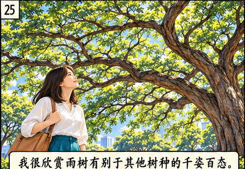
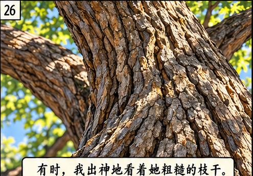
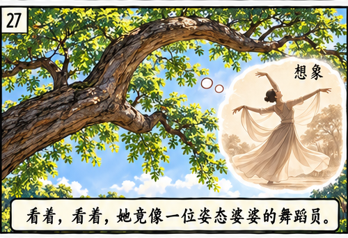
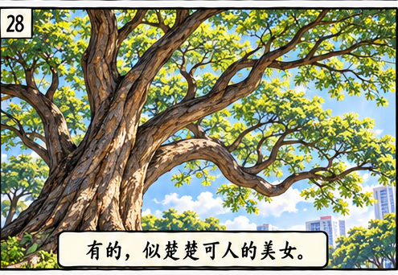
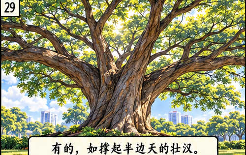
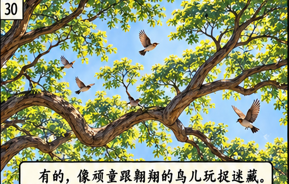
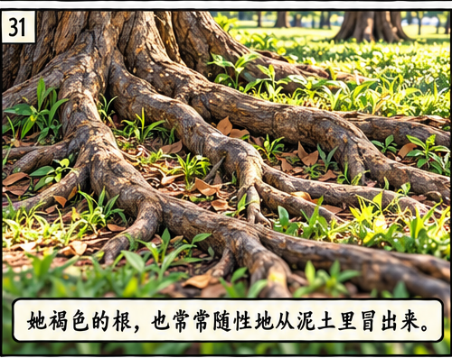
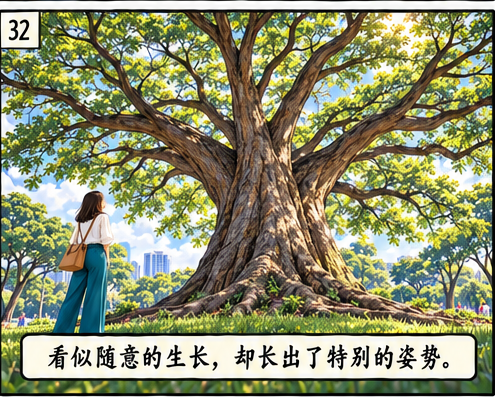
第7段
雨树非常大方地让许许多多的植物生长在她的身上，彼此同甘共苦，茁壮成长。雨树与她这些“孩子们”，不就像新加坡与新移民一样吗？彼此包容、接纳、齐心、奉献，为美化家园共同努力。
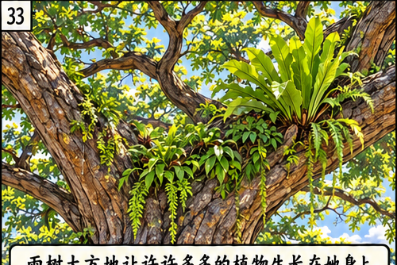
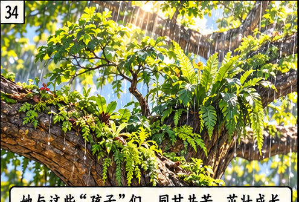
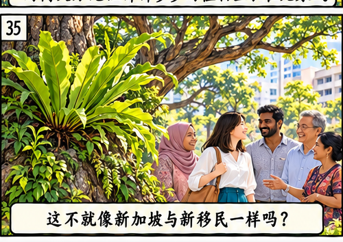
第8段
雨树无怨无悔地承受着风吹日晒雨淋，只为给我们一路风景，一程舒适，一生温暖。她主干上那些伸展的分枝，犹如千手观音似的，托着层层的枝叶，绿化、柔美了我们的城市。
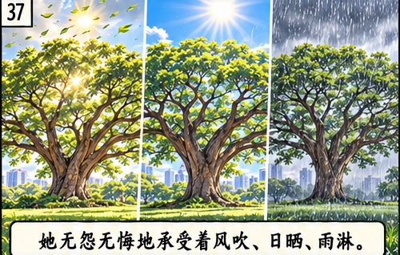
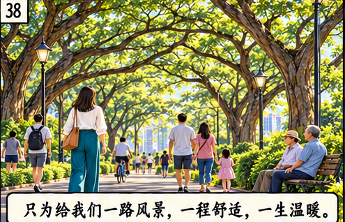
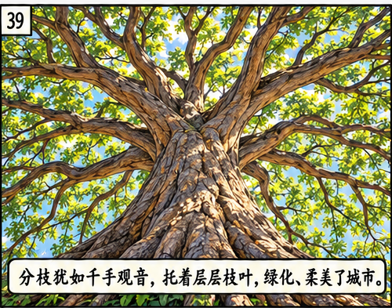
第9段
雨树，你姿态万千，包容、奉献，你是我们的树，我们无处不在的风景！
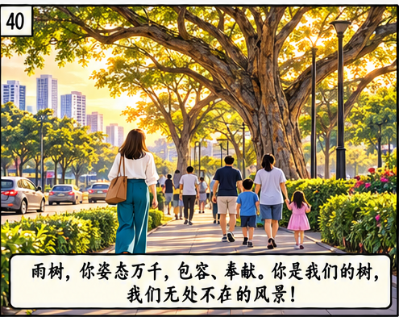